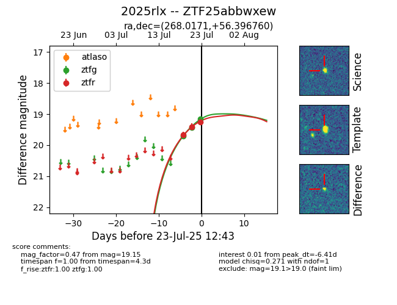

Target ZTF25abbwxew at 2025-07-23 11:52, see:
FINK: fink-portal.org/ZTF25abbwxew
Lasair: lasair-ztf.lsst.ac.uk/objects/ZTF25abbwxew
ALeRCE: alerce.online/object/ZTF25abbwxew
TNS: wis-tns.org/object/2025rlx
YSE: ziggy.ucolick.org/yse/transient_detail/2025rlx
alt names
ZTF25abbwxew (ztf,fink)
2025rlx (tns,yse)
coordinates:
equatorial (ra, dec) = (268.0171,+56.39676)
galactic (l, b) = (84.6000,+30.39494)
photometry
last ztfg=19.15, ztfr=19.25
3 ztfg, 3 ztfr detections
